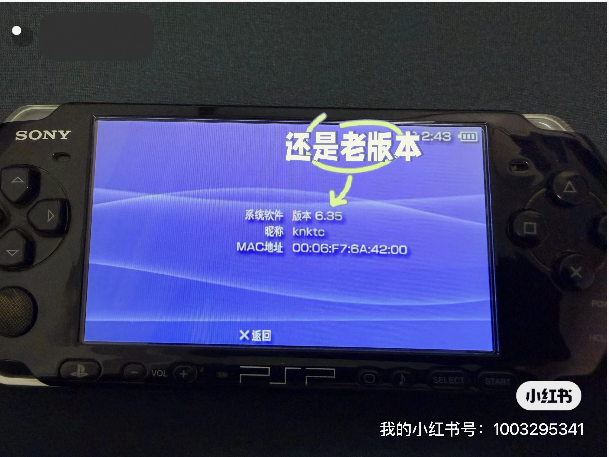
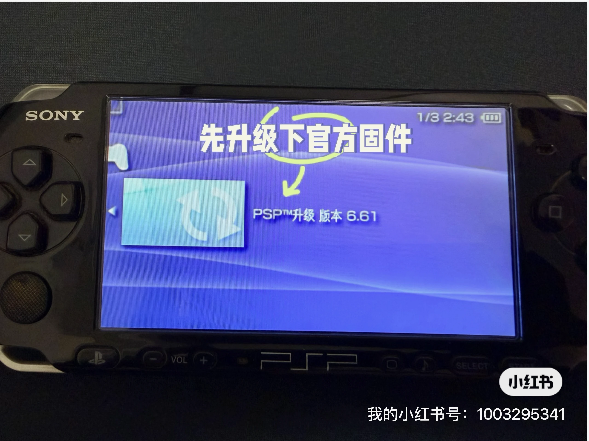
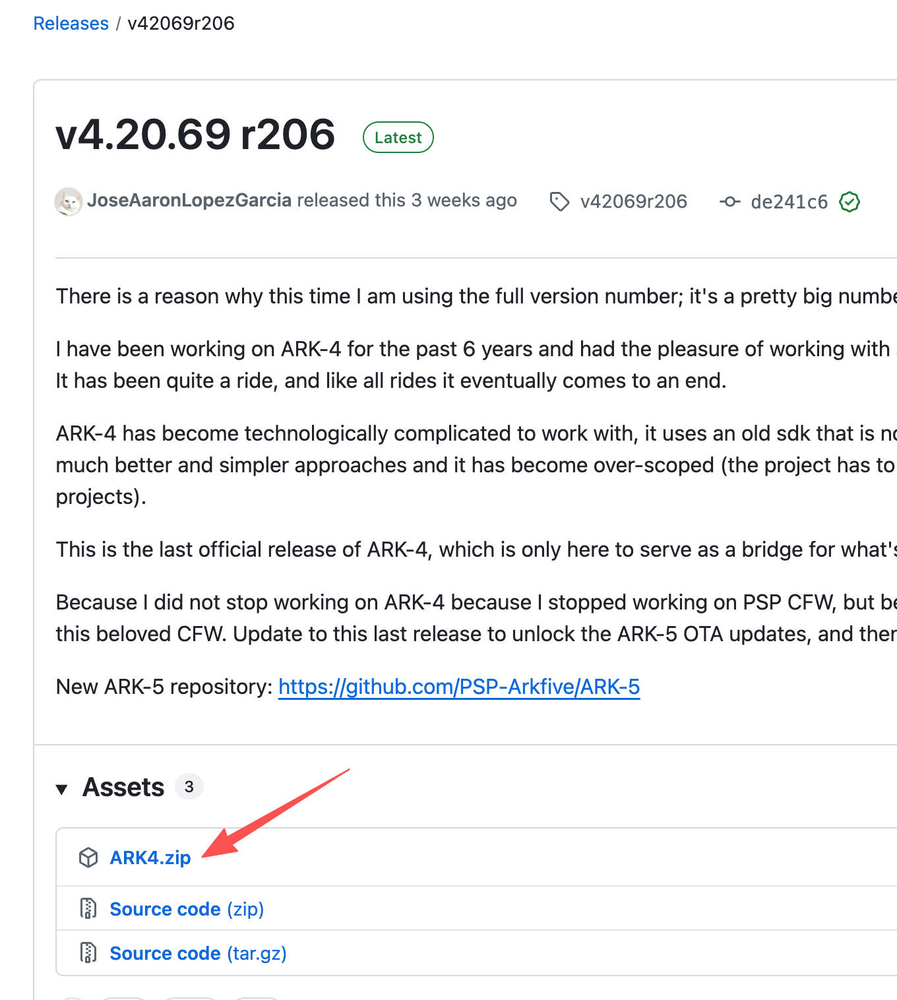
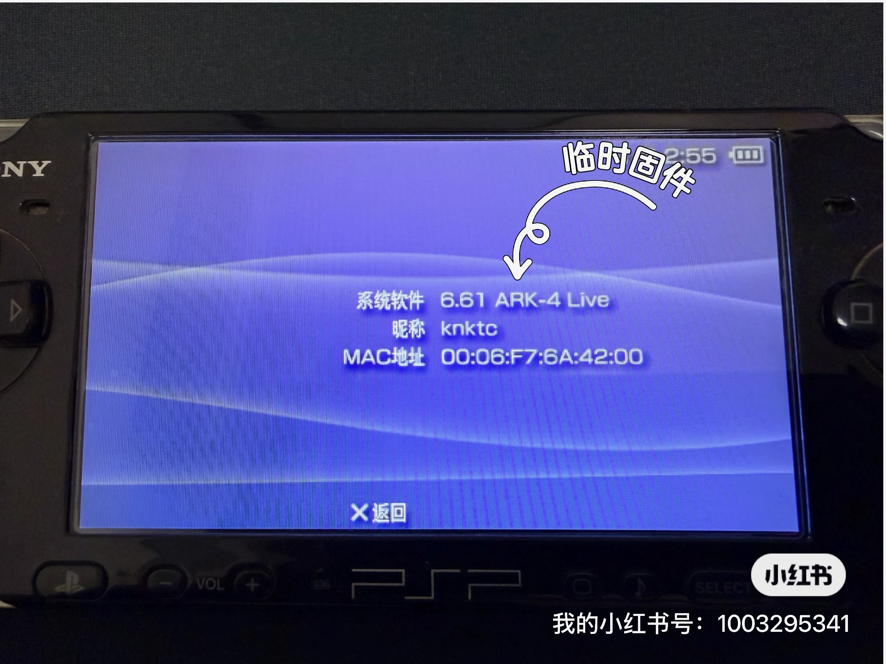
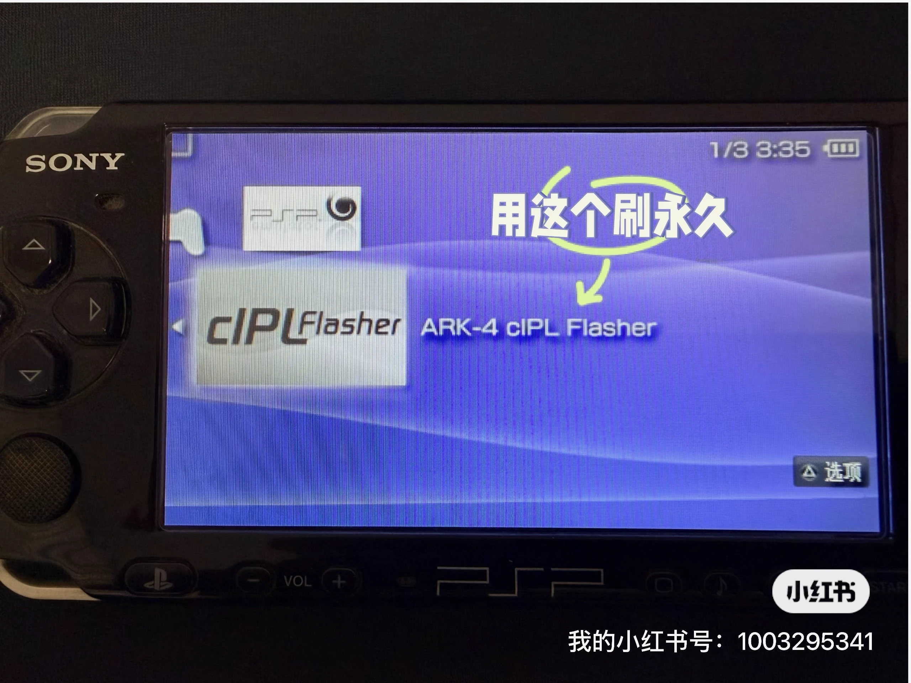
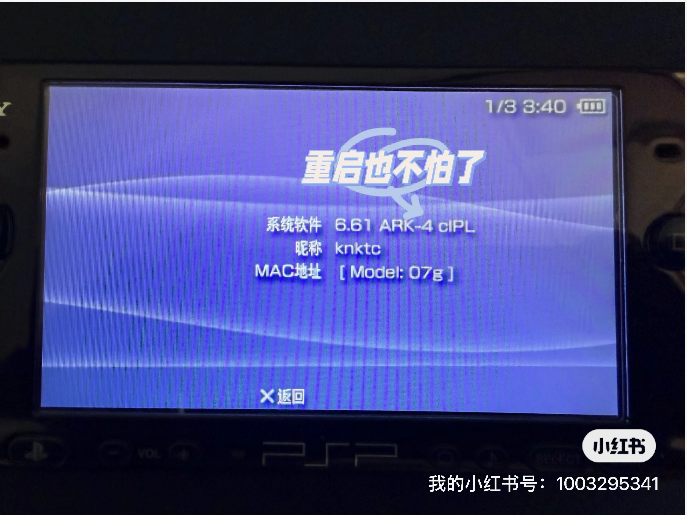

Some time ago, my son dug out an old PSP from storage.
It was my old PSP 3000, the kind of device that still carries a lot of memories from years ago. The console itself still worked, but the battery had already swollen, and the old third-party Memory Stick was basically unusable. After replacing the battery, I bought a Memory Stick adapter, put a TF card in it, and finally got the handheld powered on again.
Getting it to boot was only the first step. The bigger problem was that both the system software and the old modding setup were badly outdated.
Back in the day, this PSP was running PRO CFW. At the time, that was not nearly as convenient as the options available now. Every full reboot meant launching the custom firmware again. The old card was gone, so the old files were gone too. I ended up checking what people were using for PSP modding these days, and to my surprise the scene is still very much alive.
The more mature path now is to first upgrade the system to the final official firmware version, 6.61, and then install ARK-4. That is exactly what I did this time. The whole process turned out to be much more straightforward than I expected, so I thought it was worth writing down.
Check the current firmware first
The first thing to do is open the system information screen and see what firmware the console is currently running.
Mine was still on 6.35:

If your PSP is also on an older firmware, it is better not to jump straight into custom firmware first. Upgrade to official 6.61 before doing anything else. That was Sony’s last official PSP firmware release, and most current tools and guides assume you are on 6.61.
Upgrade to official firmware 6.61
The official firmware files are still available online. I used this archive site:
https://darthsternie.net/psp-firmwares/
Just find the download link for 6.61. If you can, it is a good idea to verify the file hash after downloading it.
Before copying any files, I recommend inserting the TF card into the Memory Stick adapter, putting it into the PSP, and formatting it there first. That way the filesystem and folder structure start out clean, which helps avoid odd issues later.
The downloaded firmware file is usually named 661.PBP. After connecting the card to your computer, create this folder on the card:
1 | /PSP/GAME/UPDATE |
Then rename 661.PBP to EBOOT.PBP and place it inside that folder.
After putting the card back into the PSP, you should see the updater under Game and then Memory Stick:

Run it and follow the on-screen prompts. The process only takes a few minutes. Once it finishes, the system information screen should show 6.61:

One important warning here: make sure the battery is sufficiently charged, and ideally keep the PSP plugged in during the update. You really do not want power loss in the middle of a firmware flash.
Install ARK-4 next
Once the official firmware upgrade is done, you can move on to ARK-4.
Unlike the old days of hunting through random forums for custom firmware downloads, ARK-4 now has a proper GitHub project and release page, which makes things much easier to follow:
- Project page: https://github.com/PSP-Archive/ARK-4
- Releases: https://github.com/PSP-Archive/ARK-4/releases
As of June 1, 2026, the latest stable release visible there is v4.20.69 r206. The release notes also make it clear that this is the final official ARK-4 release, with future work moving toward ARK-5.
Download the ARK4.zip asset from the release page:

Copy the ARK-4 files to the memory card
Reconnect the TF card to your computer, extract ARK4.zip, and copy a few folders into the right places.
The main ones you need are:
- Copy
ARK_01234to/PSP/SAVEDATA/ - Copy
ARK_Loaderto/PSP/GAME/ - Copy
ARK_cIPLto/PSP/GAME/(note that this folder is under thePSPdirectory inside the zip archive)
The first two are enough to get ARK-4 running. The third one is for making the setup permanent afterward.
Launch temporary ARK-4 first
After putting the card back into the PSP, go to Game and then Memory Stick. You should see ARK Loader.
Run it first to boot into temporary ARK-4:

After that, check the system information screen again. The version string should now show the ARK-4 Live label. At this point, you can already run games and homebrew normally. The only limitation is that after a full shutdown, you would need to launch ARK Loader again:

Then install cIPL for permanent CFW
If you want the PSP to stay modded even after rebooting, the next step is to run ARK cIPL Flasher.
Launch it and follow the prompts to install. On my PSP, the whole process only took a few seconds:

Once it finishes, open system information one more time. The version string should now include cIPL:

At that point, my PSP 3000 was effectively set up for permanent ARK booting, without having to relaunch the loader after every restart.
Where to put game files
The final step is easy.
Put your downloaded PSP game files in .iso or .cso format into the ISO folder at the root of the memory card. If the folder does not exist yet, just create it yourself:
1 | /ISO |
Once the files are there, the PSP should detect them normally:
Final thoughts
What I enjoyed most about bringing this old PSP back to life was not just that the modding worked. It was that the whole experience instantly brought back a very specific kind of old gaming memory.
It was already satisfying just to see the handheld boot again and load games properly. But what stood out even more was how much more polished this upgrade and custom firmware path feels compared with what I used years ago. At least for my PSP 3000, going from official 6.35 to 6.61, then installing ARK-4, turned out to be smoother than I expected.
If you still have an old PSP sitting in a drawer somewhere, it might be worth pulling it back out one weekend. There is a good chance you will end up reviving more than just the console itself.